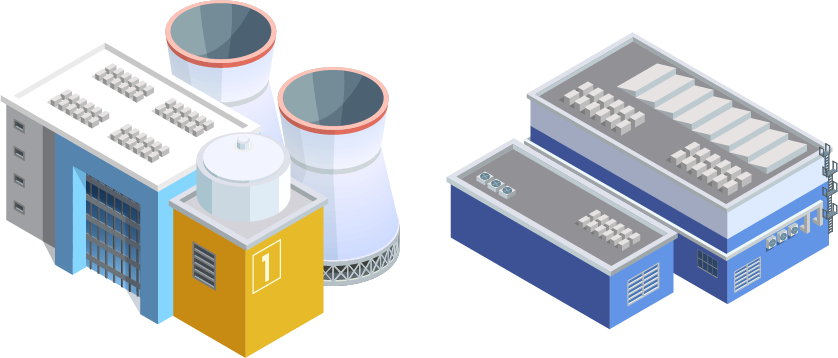
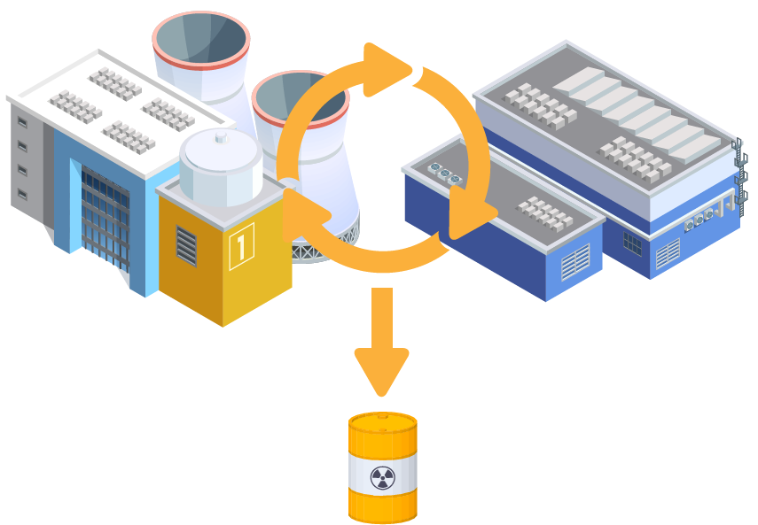
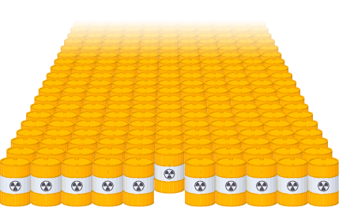

ゲームの背景
高レベル放射性廃棄物
原子力発電所で生じた「使用済み核燃料」は、再処理工場に集められ、再利用できる核資源にリサイクルされます。
しかし、その中にはリサイクルできない「高レベル放射性廃棄物」があります。
これをガラスに溶かし固めた「ガラス固化体」の形として、安定化させます。


核のゴミ問題
日本では、このガラス固化体がすでに25000本相当発生していると言われており、安全な方法で処分しなければなりません。
しかし、もう10年以上も処分にむけた目処が立っていません。

処分方法の検討
宇宙に飛ばす「宇宙処分」
海底に埋める「海洋底処分」
南極の氷の下に埋める「氷床処分」
など、これまでに様々な処分方法が検討されてきました。
地層処分
地層処分とは「何重ものバリアを施して300m以深に埋める方法」です。現在、これが最適な方法であると国際的に共通認識されています。
なかでもフィンランドは、世界に先駆けて事業を進めており、処分施設を建設中です。
一方で日本は、処分施設を建設する「処分地」の候補すらあがっていません。